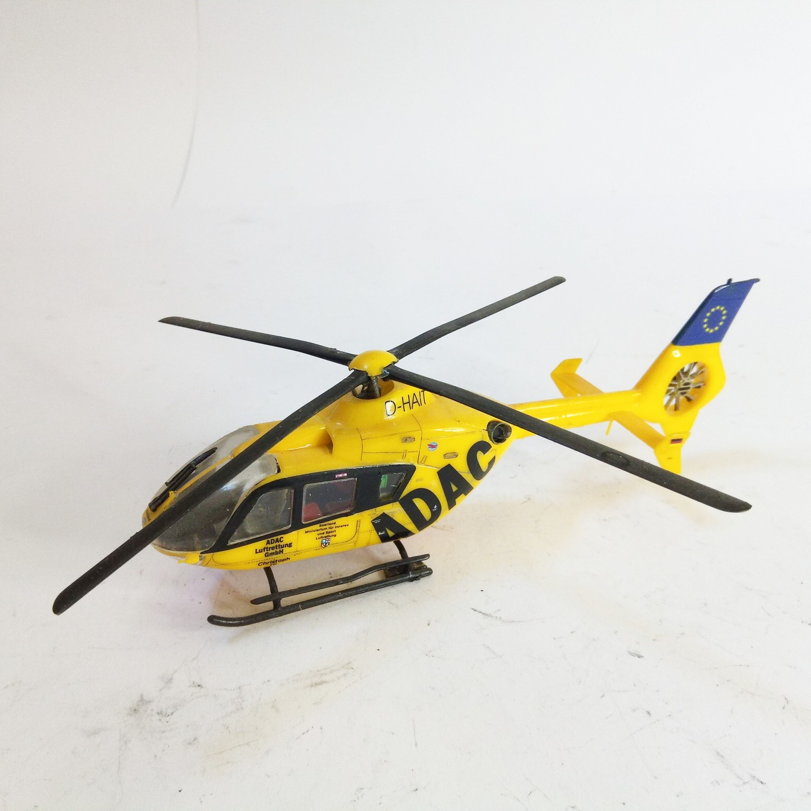
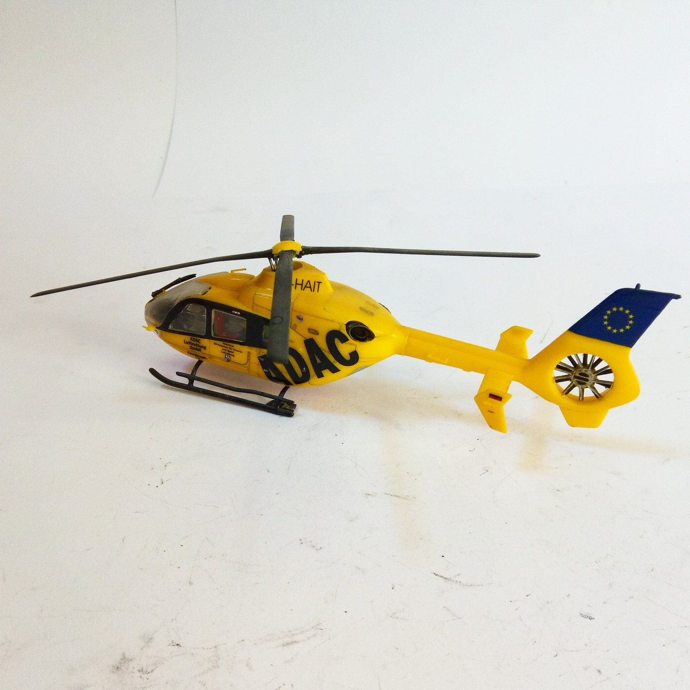

Aerei · scale model archive
Eurocopter EC-135
Eurocopter EC-135 — Kit: Revell, Scale: 1/72. Christoph 16 D-HAIT August 2001 - Krankenhaus Winterberg, Saarbrücken #1/72 #Revell

Photo gallery

English description
Christoph 16 D-HAIT August 2001 - Krankenhaus Winterberg, Saarbrücken
#1/72 #Revell
Descrizione italiana
Christoph 16 D-HAIT agosto 2001 - Krankenhaus Winterberg, Saarbrücken.